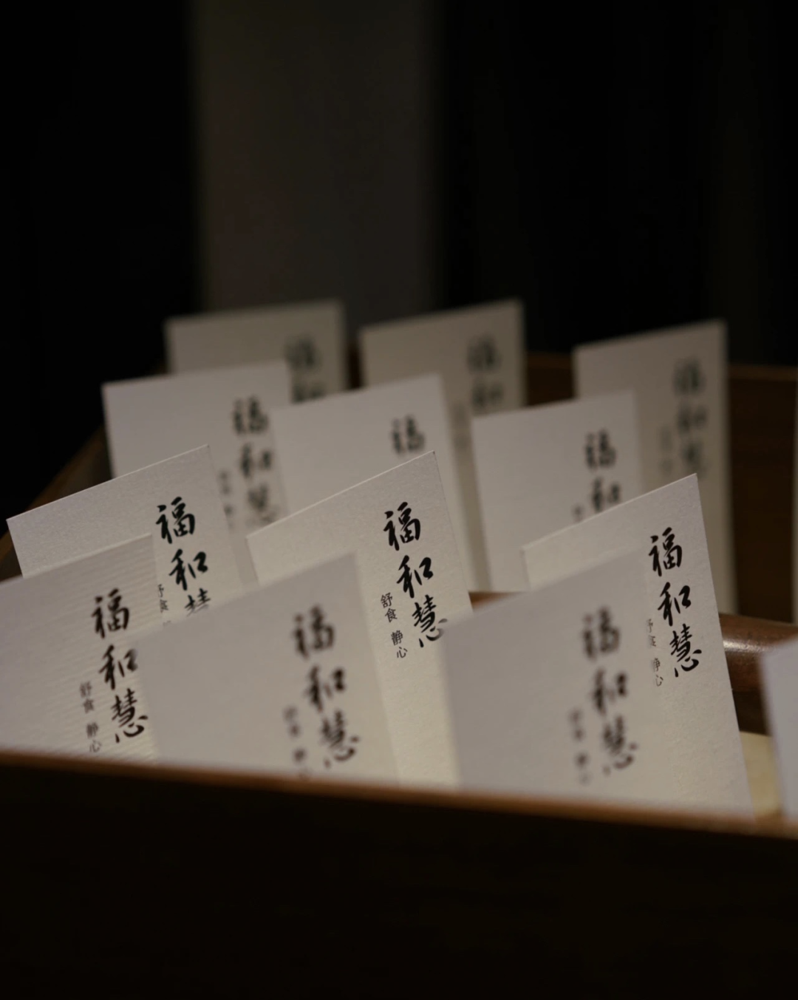
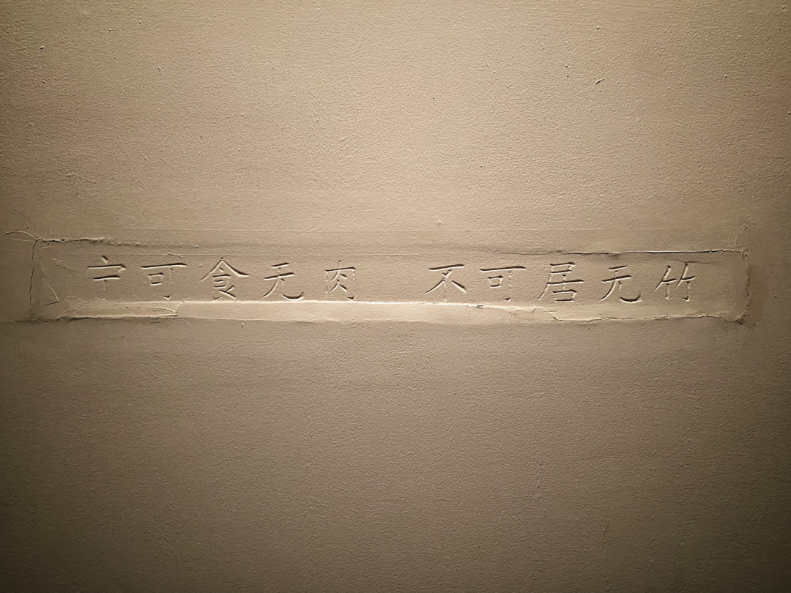
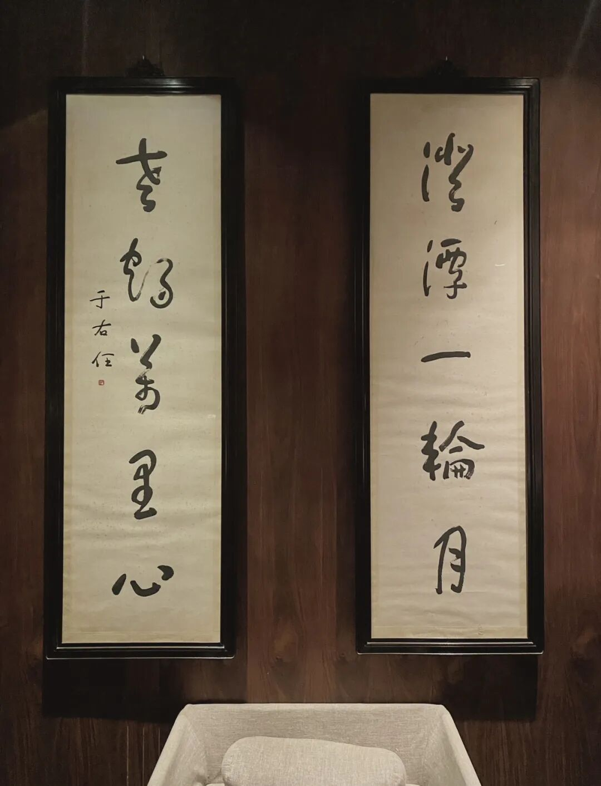
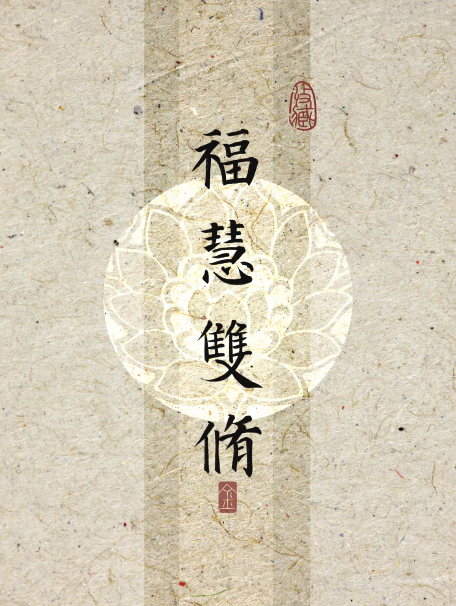
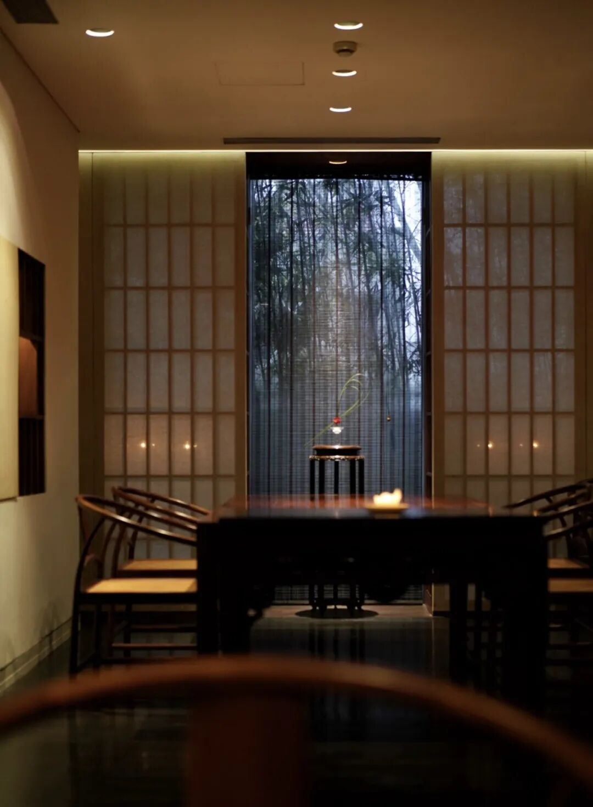
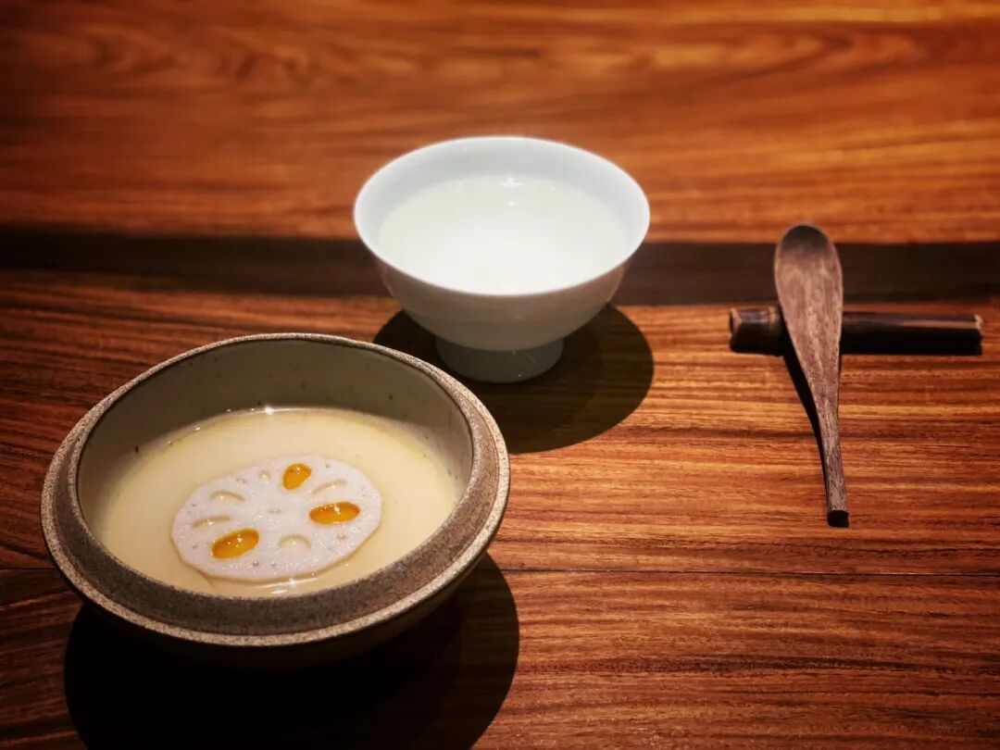
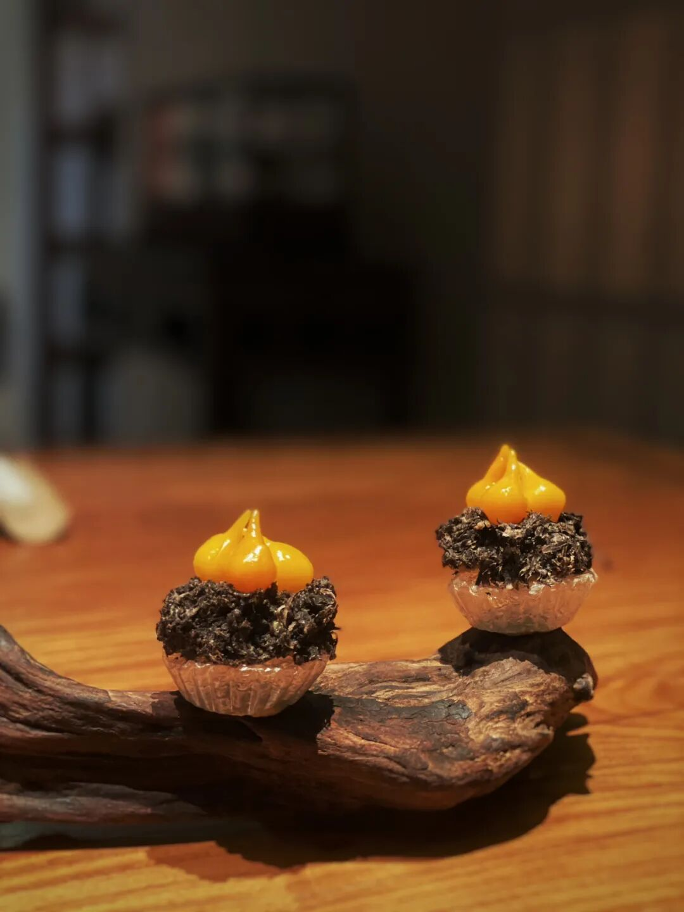
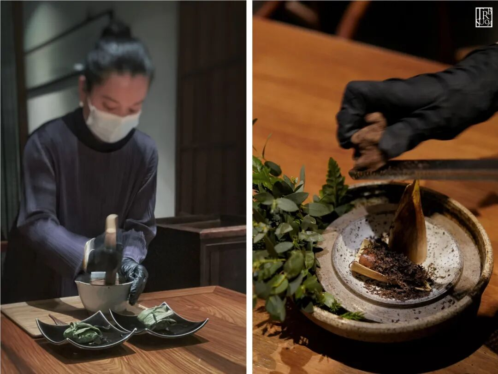
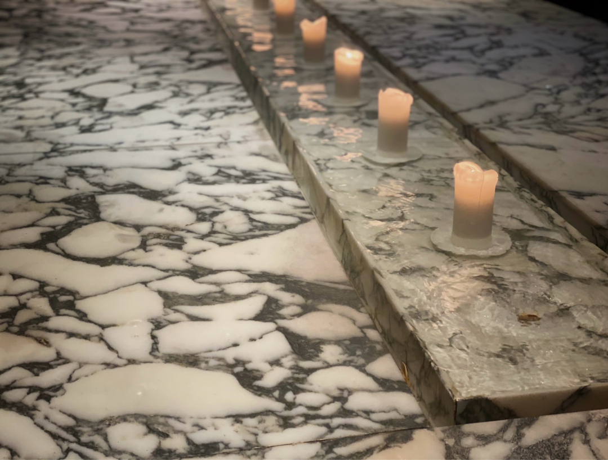

修行中最简单的事

朱大状是上海滩鼎鼎有名的律师，每晚都有饭局，可谓老饕。不过，他唯独钟情愚园路上的福和慧。
即是黑珍珠又是米其林的餐厅吃过不少，但能连续7年上榜Asia‘s 50 Best，中国内地的餐厅应该只此一家。
Seasonal Menu 四季更迭，每一季朱大状都早早约好。 他说，好的 Idea 胜过苦干蛮干，在上海的众多餐厅中，福和慧独树一帜，值得他的偏爱。其次，人生，特别是奋斗过程中容易陷入“知觉障”，埋头工作也无法理顺，就放下手头工作，来这里放松一下。很多灵机一动的金点子都是在这里悟出来的，类似苯分子结构的发现，福和慧是他的福地。
冬天，福和慧出了新菜单，朱大状请我去吃。

一进门，我就被三处细节打动：
其一，白墙上浅浅刻着一行诗：宁可食无肉，不可居无竹。出自苏东坡的《于潜僧绿筠轩》。北宋熙宁六年春，他与慧觉禅师游绿筠轩时，写下了这首诗相赠。
借苏东坡的诗，歌颂风雅高节，批判物欲俗骨，给了 “吃素”一个无法拒绝的理由。
其二，一楼内堂隐秘角落挂着的一幅字，工整简约，却气韵非凡。乃于右任的真迹，价值百万，不在博物馆拍卖行，却在一家餐厅低调地作摆设。

其三，餐厅名字福和慧的由来，很少有顾客思考过。
《华严五教章》有云：“此终教中论其实行，从初发意，即福慧双修。故成，时无别修也。" 意思是修行要有所成，没有什么特别的法门，就是福慧双修而已。
从佛法的观点看，人与人之间的竞争就是福和慧的竞争，无论我们的长相、出生、学历、财富，还是生命的喜悦状态的差别都是福和慧的差别。
“福”指的是我们外在依存的环境，也可以理解为更好的物质生活。“修福”即为布施，由此才有无量福德。
“慧”指的是我们内心对事物本质的洞察，对人生宇宙的认知。“学慧”即为觉行，由此而产生了智慧。
“修福学慧”，说白了就是既要修我们的智慧，也要修我们的福报，两者都达到尽善尽美的境地。

这些暗藏的隐喻，不直白的表达，是走马观花的美食家或探店攻略不曾留意到的，却反而为懂经食客与创造这个空间的主人创造出属于私人的默契。我们素未谋面，但我接收到了这一暗号。
朱大状是老顾客，店经理早早留好包厢，在厅堂里就唤到：“朱总的客人到了。” 进了包厢，侍者又笑吟吟地奉茶：“朱总又来吃啦。”
在福和慧吃饭前要先饮茶，随着菜又配了不同的茶一共四款：普洱，冷萃金桂六安瓜片、香水莲、武夷山岩茶金面奇兰。
中式素食配茶上海唯独他们一家。除此之外，我仅在杭州的桂语山房尝到过这样的 Fine Dining 与 Tea Pairing 的组合。

茶道是一项兼具审美和哲学的仪式。
如今很多精致女孩都讲究仪式感，我倒觉得“仪式感” 并不是在情人节时要求男友送一束花，在人潮拥挤的西餐厅里吃一顿不能自选的情人节套餐。
它是一些“时光”，因为有了仪式，某一天才有别于其他任何一天，某一个小时才有别于其他任何时刻。
福和慧把最简单的喝茶、吃饭的日常行为神圣化，如何选用当季代表性食材，如何将口味和口感营造的感受与季节相结合，如何给食客完整的体验感，每季的菜单便是答卷。
如此这般，朱大状这样的老饕才愿意放下手上各种IPO的官司纠纷，在一家古朴的餐厅，进行吃素、饮茶的仪式，获得灵感。
在福和慧，“吃素”不再是一个简单的动作或决定，而是一个可以无限延展的主题。


整个佛法体系，其实就是在讨论“修福”和“学慧”的方法。而修行其实就在一箪食，一瓢饮的日常中
我给各位读者一个日常建议：试着每天花15-30分钟去完成一件对你来说很有意义的事情。
这是修行中最简单的事。
我练习瑜伽十年了，除了变得柔软，还学会了保持清醒、理性和简单。
这些皆是佛教、道教和瑜伽的基础。
尤其是简单，其实并不简单。并非一味地做减法，而是通过改变事物的优先级，足够清醒和理性地洞察事物的本质，从而让自己的人生从美好，趋向更加美好。这就需要你看透后甘愿放下很多所谓的大事，包括且不限于：为见一个重要人物或拿下一个大项目而连续赶早班机当天往返，为了早半年升合伙人而连续熬夜，为了登上人物榜而在复杂人际和酒局中费劲心机……

化繁为简，才能享受一条街道的变化，一个明天也会照常升起的太阳，一顿和上一季菜单并没有什么大不同的饭，一杯说不出哪里好的茶。
你的生活、你的特点、还有那些塑造你、改变你、深爱你的人和事，回顾这些时光，你就在做回你自己。

分享一种真真正正的浪漫
人生好辽阔，不止爱恨
还有吃喝
哈哈哈……

2023.08.24
——
END